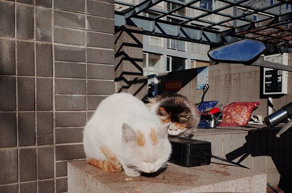

复工缓慢需求疲软，苹果华为三星受疫情冲击几何？
原文链接 备份链接 全球70%的智能手机都在中国生产制造 隔离限制致工厂开工延误、劳动力供应短缺“虽然部分手机生产线已转移到越南、印度等国，但供应系统一直在中国。供应系统比组装线更有价值，要珍惜来之不易的供应链，尽快恢复，保持优势。” …

疫情让我们陷入焦虑与恐惧之中，比起宅在家里无所事事，很多人宁愿复工，回归熟悉的节奏与忙碌。今天的来信者是一位诗歌爱好者，封闭在家的日子里， ta 写诗、读诗，捕捉压抑生活中的一丝诗意。这份诗意也一直延续到了 ta 复工之后。

如果天空只下铁
撰文：苏立
2 月 13 日，朋友发来某直播网站上的一个直播间 ID，说欢迎九点半进去看一场八人小型读诗会直播，他也会读上几首。
时间到了，直播间被封，辗转多次，终于在某个地方成功地读上了一口。诗会的形式是大家轮流在各自的家里做直播，这个家，分布在全国各地。
有波折，但最终还是行得通了。但那因为几次被取消和拒绝而带给人的情绪始终笼罩在人们的心头，有人狠狠地打赏去了几个礼物。

▲2020.2.14 北京，作者摄
我想起小时候，有一次学校组织去公园春游，规定不能带小零食，但我还是偷偷把买来的糖豆藏在裤子口袋里，糖豆的包装是一种手枪形状的透明软塑料盒子。在玩儿滑梯的时候，糖豆小小的盖子被挤开，还是从裤子里掉出来了。当场就被老师没收了。
我也没含糊，下了滑梯就说要去上厕所。在厕所门口的草坪上，抠出裤子口袋里剩下的几颗糖豆，慢吞吞地把它们砸吧完了。一直记得当时的感受，我挺财迷的，所以非常心疼被没收的糖豆（被老师扔了），我也挺现实的，对待剩下的几个也能努力调整心情，以一种比较享受的姿态品尝掉了。
谁都有过玩具被藏、零食被没收、电视不让看的童年经历吧，也都有过在被藏之前先主动藏好自己的玩具，在进家门之前嗦完最后一口冰棍儿，听着楼梯里父母回家的声音赶紧关掉电视的经历吧。
长大以后，想读几个喜欢的句子获得共鸣，欣赏美物与人分享，却也要经历一番跋涉。这不就是人类花样繁多活色生香的各种欲望中之一种，想吃、想爱、想臭美、想玩、想乐、想表达、想读出声音。
除夕的晚上，我在自己的公众号「夜路笔记」上发了一首当天晚上写的诗，之后就一个人靠在床头等新年的到来。旧历年与新年交替的时刻，窗外没有响起一丁点儿烟火炮仗的热闹音，建筑物显出一种奇特的死寂，街道荒芜，虽然街灯灿烂。
我给远方的朋友打了一个电话，说话的时候眼睛湿了，我说我挺害怕的，如果是我，如果总有一天会是我。
当时，我想把这首诗读给对方，但最后没有——
昨日的世界
写于 2019 除夕，修改于 2 月 20 日
旧是云飞雪急倚危墙忘旧人哭，野烟袅袅聚而又散拼不出一首安魂曲
有人怜我萋萋别情唱不出一句短歌，抛弃什么就更要夺走更多
于是望孤山，夕阳灼灼寻不到我，风吹星辰不动而摇晃似我
喉咙的哭喊消失了声音，你不会笑总有人教你多情却总似无情的生活艺术
子庚黄月跨进门楼，新事旧时人影憧憧星星直盯我的眼睛
固知一死生为虚诞我仍想你
相去万里一句真话压紧我的胸口
用一种持续的忍受与爱使一颗心仍顾盼夏日晚风
也有摩西分开红海出埃及，哪只手枯瘦，就要向海中伸杖
于是各自占据了自己的阵地，在新旧交替的午夜起飞
匐在大地纯真的身体，宇宙震动洒下细雨我舔
淋湿我浸透我毁坏我，再给我一个启示般的激越
替我安慰
替我怜惜
替我抚摸
垂涎一个在爱人怀里喝酒的良夜是我
把酒杯打翻拿来另一个是我
寂寞被丢入火箱，烧出满天星星是我
星星必须足够小才足够亮，星星的发亮并不只为与自己交谈
只要星星还活着
星星就能跨越遥远的光年，与另一颗对话
又是昨日的世界且旧且新
采望星星也有无数告别空无，千里逢迎
那个八人读诗会活动的海报上印着的是一句由布莱希特的诗改写而来的句子：如果天空只下铁。
*
春天，接连不断的雪
早起拉开窗帘发现下雪了，道路空空荡荡，暗淡的太阳高悬，整个天空都是白色的。
电话响了，是我妈。视频中她切开一颗紫红色的西番莲，夸赞我“吃货助农”的选购比她旅行广西时候吃到的还要好。
“昨晚有人给我打了好几通电话，刚才才接到，说是卖西番莲的，让我过一下称，看有没有少。”我妈说。
水果够称，我妈深受感动，叮嘱我，“一定给个好评，再多买几斤。”
我划开淘宝上的这笔订单定睛细看，发货地：云南德宏傣族景颇族自治州。
出于好奇，我查了查这个地方：“德”为下面，”宏”为怒江，意思是：怒江下游的地方。傣族景颇族自治州地处西南边陲，在云南省西部中缅边境。
我想象在那个冬无严寒，雨量充沛的地方，被我妈吃掉的那颗西番莲在山谷丛林中健康地生长，直至成熟蒂落。
店家的商品详情页中，一大群母鸡徜徉在西番莲树下：果园中养鸡，在散养土鸡的同时，抓走害虫，同时能够为果树提供天然的养料。
吃货助农下了五单，不是每一笔订单都顺利。
几天前，有一个海南芒果的订单物流显示马上要到北京，却突然被发回了发货地，问店家答复说：头一批货源由于人工不足，导致在采摘、分拣、发货等环节上把关不到位，产品出现大小不一致，青果未熟以及部分冻伤的现象，所以需要“召回”。
水果、蔬菜、鲜花……此刻我的眼前出现了一片森林，万物都在跟着这个庞大的世界微微地颤抖，但还会有人把新一年的果种子埋进土里，等待它们无知无觉地发芽、开花。
同植物一样生发的，还有动物。

▲2019.12，小区里晒太阳的猫，作者摄
小区楼下，黄昏时分，一个女孩熟练地拿着笼子罩走了一只小猫（猫乖乖钻笼）：“看样子就不是野猫，你仔细看它身体，要发情了……带回去照顾照顾。”
*
复工，给一瓶竹子换水
2 月 14 日下午，一封公司复工的邮件抵达了每一个同事的邮箱。经过再三讨论，公司最终决定以少部分人先开始的方式，下周逐渐恢复办公室办公。组内同事排班，每日 50% 的人员到岗。
复工第一天，我穿了厚厚的毛衣和羽绒服，包里塞了一只烧水壶、一瓶喷洒的酒精、午饭、平时过敏时常吃的药，戴好一只比较舒服口罩，骑车出门了。
电动小牛是前一天跟朋友借来的，路上行人比前几天多了起来，一位看起来也上班的女士骑着自行车迎面与我擦身而过，护肤品的味道透过空气和口罩被我的鼻子捕捉到。
到达公司，刚做妈妈没多久的同事在收拾妥当之后发了一条朋友圈：一个月，终于又坐在了办公室里，长吐一口气，从胸腔里发出一声，耶！
跟家人和孩子憋久了，谁都想要有个机会透透气。“每天都在对方的忍耐极限反复试探哈哈”，她说。
坐在工位上环顾四周，仿佛除了人员密度降低之外，这个办公室的状态与年前并没有什么太大的不同。大家能用眼神交流的时候，就不说话，“等疫情过去，我们的眼睛一定更亮了。”
但还是有些东西变了。
两年前，前老板回德国前买了一大把转运竹，数量是按部门人头算的，希望每一个人都能“茁壮生长”，此刻，它集体焦黄的叶片夺去了我的目光……
几乎是从椅子上跳起来，我跑去给它们换了一次水。
一起复工的，还有身边朋友的小微企业。
除了问起时说“生意不太好”之外，他没有抱怨过。对于他来说，这仍是“新的一年”，渴望个人进步，渴望公司成长，渴望“多做一点，再快一点”。
他跟我说，最近公司面试一个学中文的小朋友，对方说喜欢诗歌，喜欢各种各样许许多多的诗人，让她举个例子，小朋友沉默了许久，“以为在酝酿一个惊世骇俗的名字”，最后说出了罗伯特·弗罗斯特的名字。还有点儿哽咽地补充：“最近，觉得诗歌离自己的生活好远了。”
“我知道弗罗斯特，你发给过我他的诗句。”朋友说。
我也记得，那是 Going for water 里面的一句：
Notloth to have excuse to go……We run as if to meet the moon.
很高兴可以找个借口出去……我们奔跑着像去约见月亮。

疫情不仅深深影响了我们当下的生活，也将长期占据着我们的记忆、改变我们的思想。我们需要更多双眼睛，继续观察、记录时代中的危机与转变。这些真挚而沉重的纪录，我们会留存它。
投稿邮箱：anonymous@owspace.com
Launched in 2009 by an independent bookstore in Beijing, One-Way Street is a quarterly journal that publishes essays, fiction, poetry, art, and criticism by emerging writers and artists from around the world.

《单读》2020 全年订阅计划
2020 年即将到来，希望你们继续和《单读》做朋友，在宽阔的世界里，做一个不狭隘的人。

▲点击上图或扫描图中二维码，加入《单读》2020 全年订阅计划
《单读 23 · 破碎之家》已经上市****
*它又意外地应景了*
***点击小程序购买阅读***
原文链接 备份链接 全球70%的智能手机都在中国生产制造 隔离限制致工厂开工延误、劳动力供应短缺“虽然部分手机生产线已转移到越南、印度等国，但供应系统一直在中国。供应系统比组装线更有价值，要珍惜来之不易的供应链，尽快恢复，保持优势。” …
原文链接 备份链接 友情，是尘埃写作里的一个关键主题，是她乐观的来源，是她做到持续“打鸡血一样工作”的支柱。她擅长写漂泊的生活，因为那是她最常见的生活形态。在这样的”移步换景“的写作诉求里，她遇到的最大的问题是：小处和大处怎么衔接和表 …
原文链接 备份链接 摘要：本文为“2020，我们的生活在继续”征文大赛的投稿作品。2020年，本来是计划中作为人生转型的一年。疫情一来，一切都变成了问号。 随着不能出门的日子越来越长，我的失业焦虑也愈发严重。 时至今日，已经是我在家中无 …
原文链接 备份链接 吴丹是在上海工作的武汉人。自1月5日起，她就一直待在上海。疫情爆发一月有余，各地陆续复工，但因为武汉人的身份，她又被拒绝在写字楼外，并被恶意中伤。她怒而发文，但不到半天，公司的街道便要求她删文。担心没有地方住的吴丹妥协 …
原文链接 备份链接 ***************************************▲*************春节前，日本生活空间nikoand在上海开设全球最大旗舰店，开业当天，成百上千的消费者在淮海中路分批排队，预计等 …